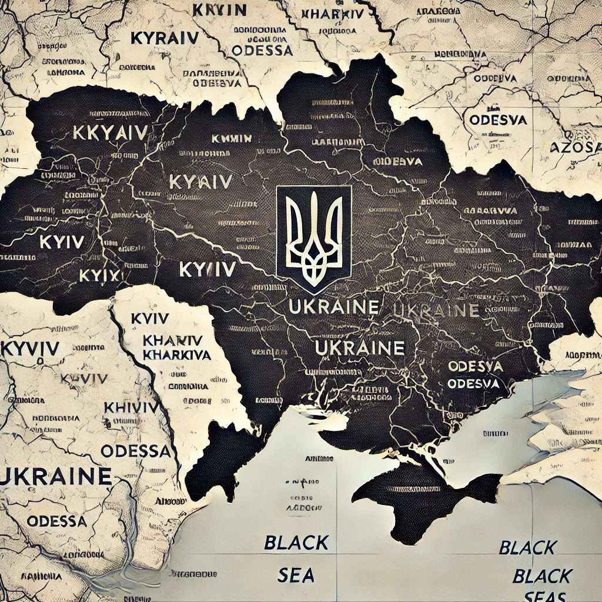
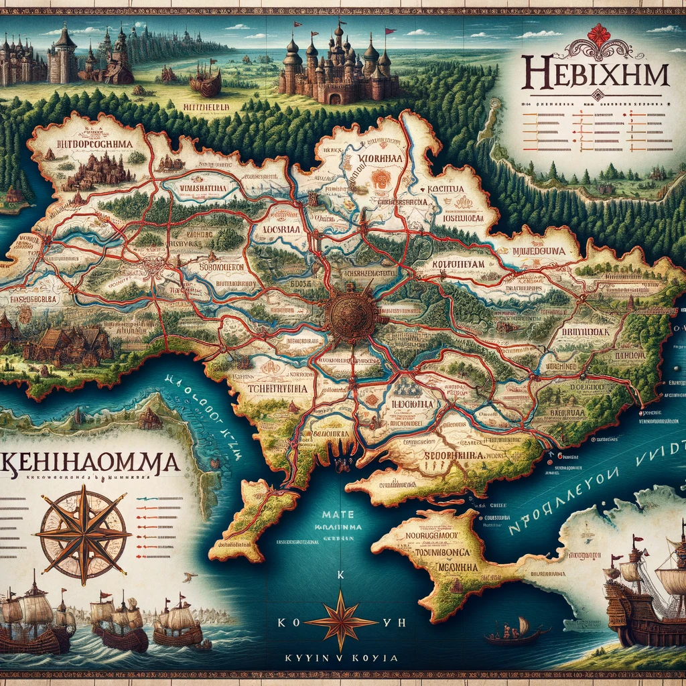
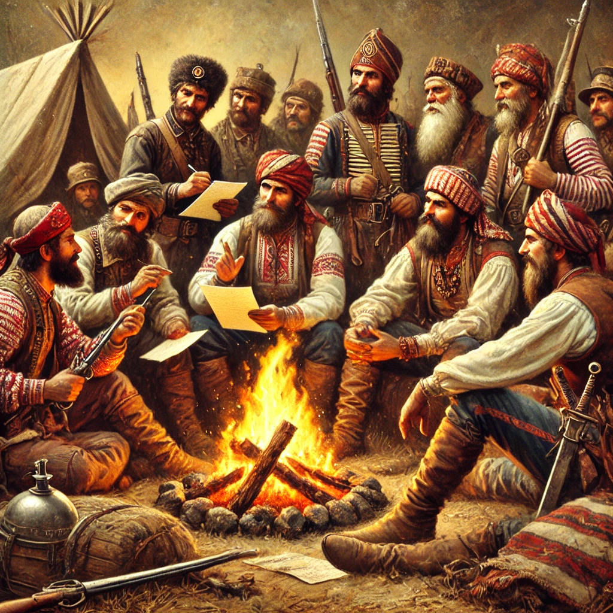
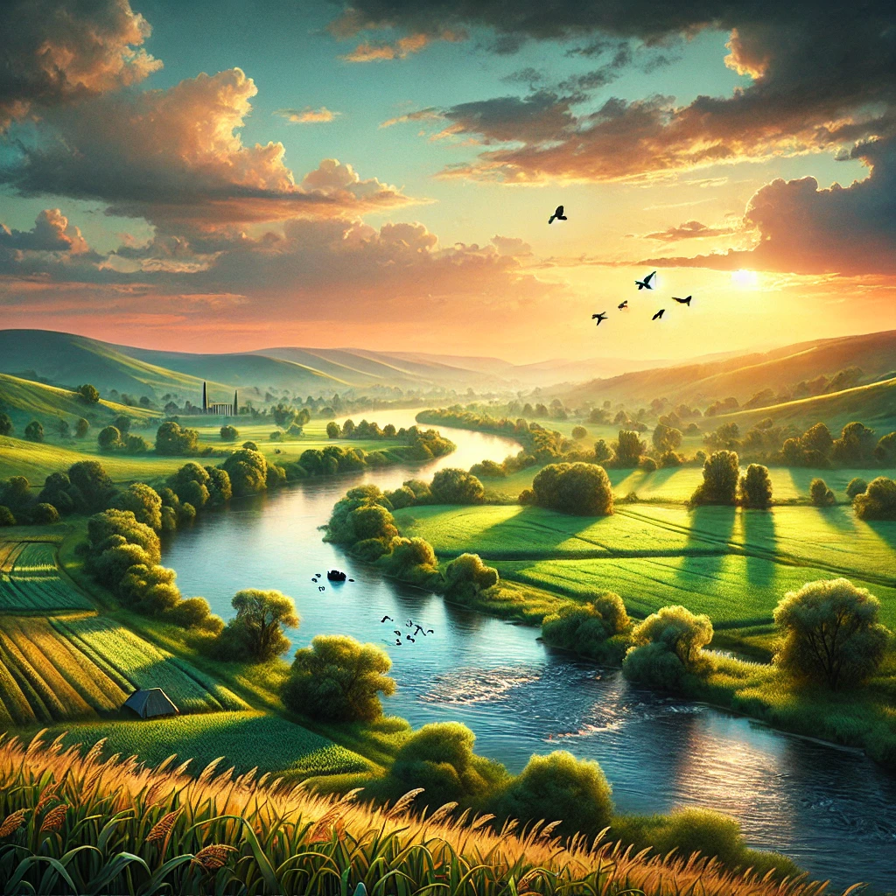

Україна: старовинна та сучасна країна
1. Загальна інформація
Україна — держава в Східній Європі, що межує з Польщею, Словаччиною, Угорщиною, Румунією, Молдовою та Росією. Країна має вихід до Чорного та Азовського морів.
1.1 Географічне положення
-
Площа: 603,548 км² (найбільша країна Європи за площею)
-
Основні річки: Дніпро, Дністер, Південний Буг, Сіверський Донець
-
Гори:Карпати, Кримські гори
1.2 Населення
-
Чисельність: близько 40 мільйонів осіб
-
Основні міста: Київ, Харків, Одеса, Дніпро, Львів
-
Етнічний склад: українці (~78%), інші національності
1.3 Державна символіка
-
Прапор: синьо-жовтий
-
Герб: Тризуб
-
Гімн: "Ще не вмерла України ні слава, ні воля"
2. Історія
2.1 Давні часи
-
Трипільська культура (IV-III тисячоліття до н.е.)
-
Скіфи та сармати (I тисячоліття до н.е.)
2.2 Київська Русь (IX-XIII століття)
-
Заснування Києва
-
Хрещення Русі князем Володимиром (988 р.)
-
Монгольська навала (1240 р.)
2.3 Козацька доба (XVI-XVIII століття)
Запорозька Січ
Гетьманщина та Богдан Хмельницький
2.4 Україна у складі імперій (XIX - початок XX століття)
Українські землі у складі Російської та Австрійської імперій
Розвиток національної ідеї
2.5 XX століття
Перша та Друга світові війни
Радянський період
Незалежність (1991 р.)
3. Природа та клімат
3.1 Природні зони
Полісся (ліси та болота)
Лісостеп
Степ
Гірські регіони (Карпати, Кримські гори)
3.2 Клімат
Помірно-континентальний
Вплив Чорного моря
3.3 Заповідники та національні парки
Карпатський національний природний парк
Асканія-Нова
Чорнобильський біосферний заповідник
4. Економіка
4.1 Основні галузі
Сільське господарство
Металургія
IT-сектор
Енергетика
4.2 Експорт та імпорт
Основні товари експорту: зернові культури, метал, IT-послуги
Основні партнери: ЄС, Китай, Туреччина